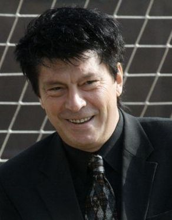

Director of communications: Leonid Trakhtenberg (Russian)
Stadium manager: Oleksandr Atamenko (Ukrainian)
Manager: Massimo Carrera (Italian)
Assistant Manager: Roman Pylypchuk (Ukrainian)
Goalkeeping coach: Gianluca Riommi (Italian)
Physical training coach: Javier Noya Salces (Spanish)
Masseur team: Andrey Pronchev, Russia Evgeny Lavrushko (Russian)
Medical Director: Mikhail Vartapetov (Russian)
First–team medic: Liu Hungsheng (Chinese)
First–team medic: Andrey Grishanov (Russian)
Rehabilitation coach: Diego Mantovani (Italian)
Rehabilitation coach: Dmitri Mironov (Russian)
Reserves team Manager: Dmitri Gunko (Russian)
Reserves team Assistant Manager: Vladimir Dzhubanov (Russian)
Reserves team Goalkeeping coach: Rinat Dasaev (Russian)
Spartak Moscow's most respected player

Rinat Dasaev was born on June 13th 1957, he joined Spartak Moscow in 1978 as a goalkeeper. He wouldn't leave the club until 1988 and would come back as a coach in 1998. The 59-year-old is a two time USSR Champions, was voted best footballer of USSR in 1982 and in 1988 was honoured as the best goalkeeper in the world by the IFFHS World's Best Goalkeeper awards.